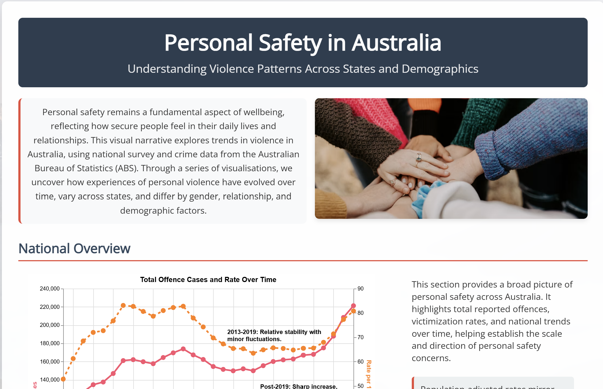
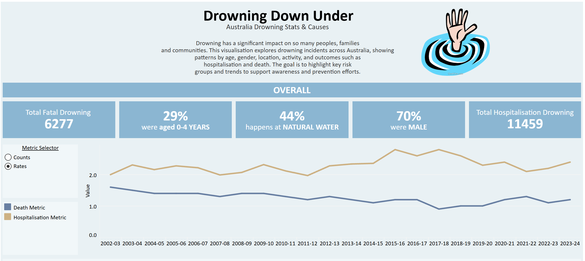
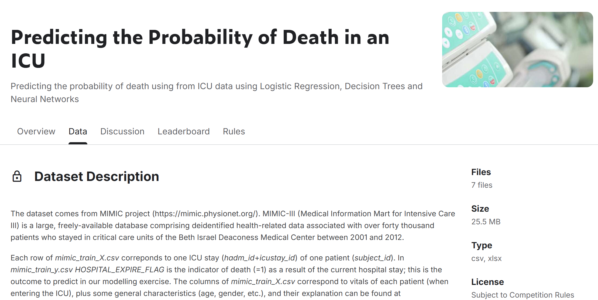

Data Visualisation of Personal Safety in Australia
This project implements an interactive data visualisation web application using the Vega-Lite library for declarative specification of charts, maps, and diagrams.

This project implements an interactive data visualisation web application using the Vega-Lite library for declarative specification of charts, maps, and diagrams.


This project analyzes the Olist Brazilian E-commerce dataset using SQL to generate business insights into sales performance, customer behaviour, product trends, delivery efficiency, and customer satisfaction. The objective is to answer key business questions and provide recommendations supported by data.

Built interactive Tableau dashboards visualising national drowning incident data across demographics, locations, and time periods to highlight key risk patterns and support public safety awareness.

This project trains and compares several classification models — logistic regression, decision trees, random forest, gradient boosting, and a neural network — to predict the probability of in-hospital death based on a patient's vitals, demographics, and diagnosis history recorded at ICU admission.
Cleaning World Covid-19 Data into a presentable format for visualising and analysing.